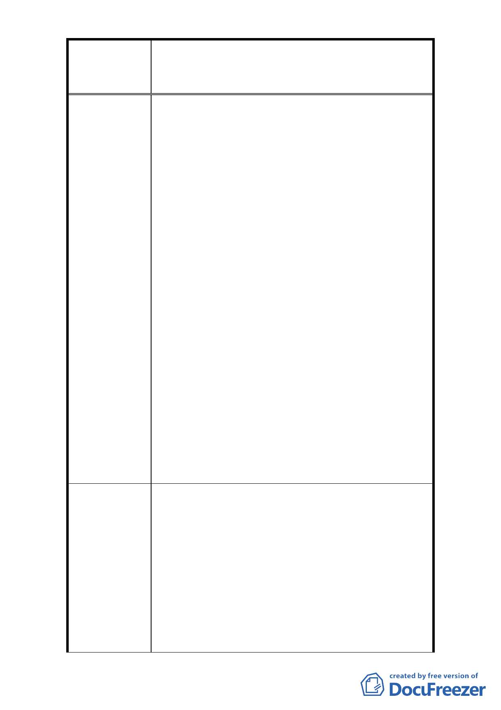

修訂臺北市大安區青田街保存區聚落風貌保存專用區細部計
案
名
畫、變更部分第三種住宅區、第三種商業區(特)為第三種住宅區
(特)(日式宿舍)及第三種商業區(特)(日式宿舍)暨劃定週邊地
區都市設計管制細部計畫案
3. 以臺北市居民的身分主張青田街兼具歷史意義與市
街特色，極具文化意義。就大台北、甚至整個臺灣
為前提的長遠考量，應盡力保留甚至修復其原貌，
以留存城市歷史並且打造成足以與其他國際城市匹
敵的文化景觀，這是無法以金錢衡量的價值。倘若
進行都更，絕對會造成更多樹木死亡、社區原有價
值日漸流失、失去特色的後果。青田街已經是溫汀
羅-台北南區珍貴的文化資產之一，都更需要從長計
議，更需公權力來保護、維護這塊難得的。
4. (1)住宅庭院與老樹為當地特色，增加周邊景觀與教
育價值。(2)不留空間降低整體天然採光功能，不符
合節能減碳原則。
5. (1)屋不留院會造成綠地縮減，無法種樹及各類景觀
植物，孩童無安全停留處，住家直接面對馬路不僅
不安全而且居住品質下降。(2)青田街有一定的人文
風貌，但高樓林立將喪失其特色。(3)保留舊有老式
建築。
6. (1)獎勵容積應謹慎。(2)100％開挖，沒有透水層下
大雨易淹水，亦無法兼顧大樹。(3)青田街日式宿舍
是台北市難得的完整特色建築，如果滿足開發建設
而忽略社區整體風貌將是臺北市民的損失。(4)市民
需要更綠色環境和生命記憶，不要把都更當作泛去
文化的機器。
1. (1)建物必須保留一定大小的前院。(2)地下室開挖
率不可 100％，必須保留部分土深給樹木生長。(3)
本區巷弄窄小，樹木林立，樓高不可過高過密。(4)
保持青田街低密度住宅區特色。
2. (1)青田街的日式建築風貌和樹木資源為臺北市少
建 議 辦 法 見的城市地景，應妥善給予保留，提供城市文化深
度和歷史見證。(2)日式宿舍的活化利用，如提供地
上物經營權給社區居民多元經營。(3)保留城市綠地
及空間。
3. 請文化局、都發局出面協調基地上已經沒有地上物
- 36 -